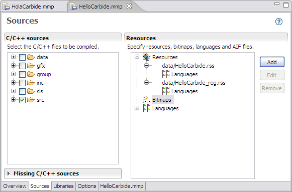
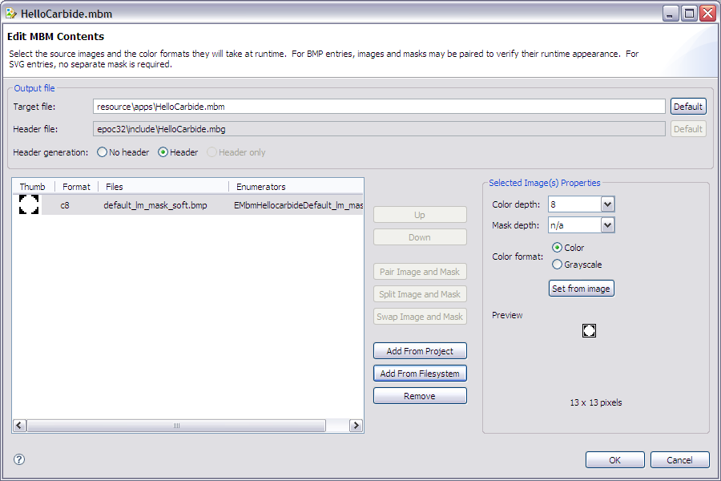
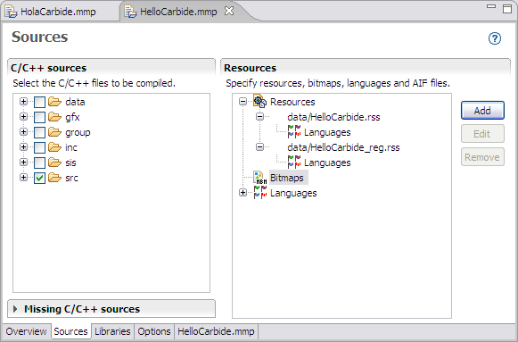
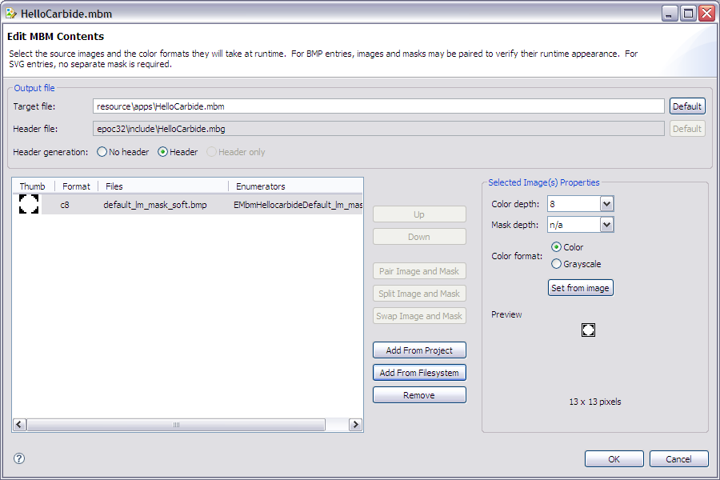

Figure 1- MMP File

Figure 2 - MMP Editor

Figure 3 - MBM Editor
You can now use the MBM Editor to add bitmaps, with and without masks, to the MBM file.
Symbian programs typically store bitmaps for application icons or other purposes in the Symbian multi-bitmap (MBM) file format, as described in MBM File. The Edit MBM/MIF Contents or Edit MBM Contents window allows you to create an MBM file.
Figure 1- MMP File

Figure 2 - MMP Editor

Figure 3 - MBM Editor
You can now use the MBM Editor to add bitmaps, with and without masks, to the MBM file.
Additional information for the MBM editor fields is provided in MBM Editor.